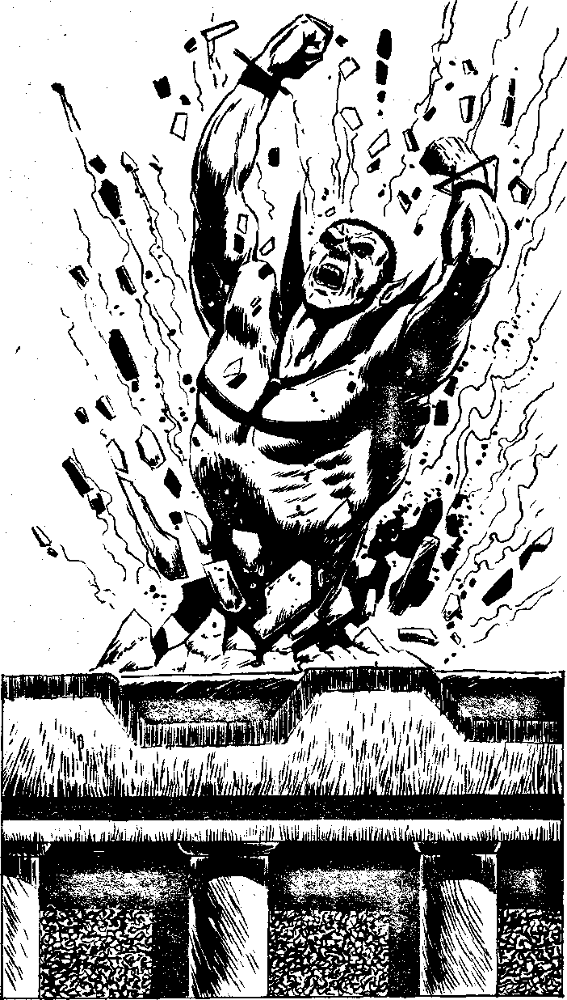

299
You burst out into the plaza, it is completely deserted. It appears the crowds have fled in the face of what has happened. All that remain are a few black-robed priests of Huitzilopochtli, whom they believe Baal to be. You sprint across the plaza. Glancing behind, you can see Baal e r u p t i n g from the building, leaving it a mass of broken masonry. He soars into the air and speeds after you. You are shocked to see that he has some means of natural flight without wings, at his disposal, perhaps some form of telekenisis, or mind over matter. He is gaining on you. Will you:
| Turn, kneel and fire your blaster at him? | Turn to 75 |
| Run on, hoping to reach Falcon's Wing before he does? | Turn to 372 |